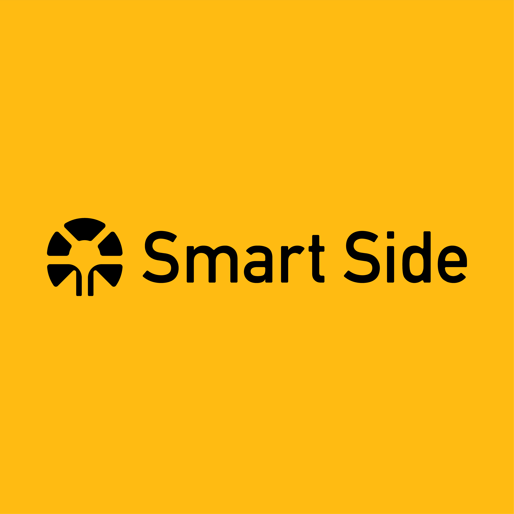
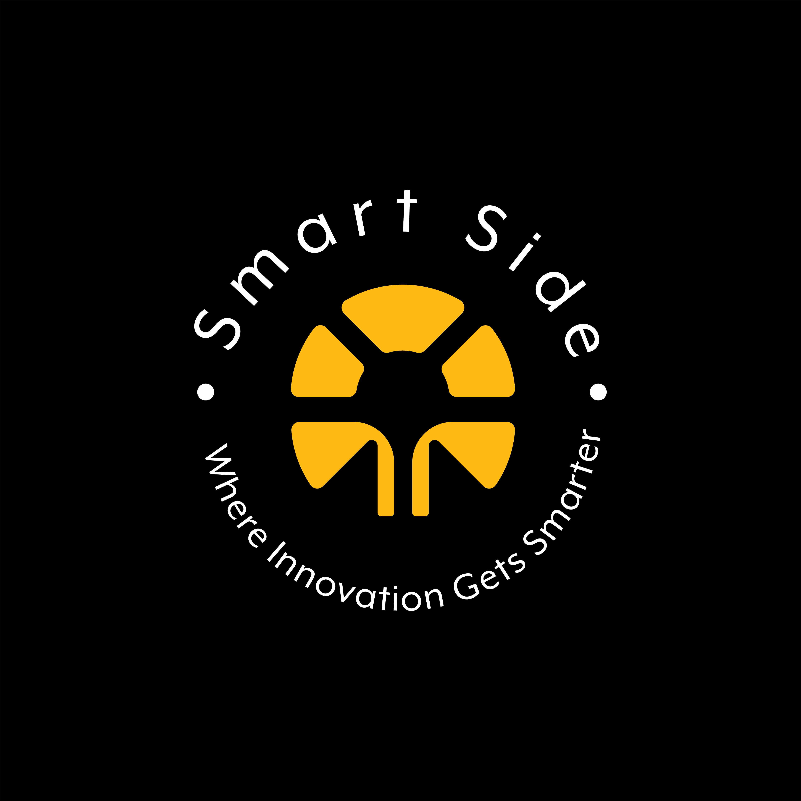
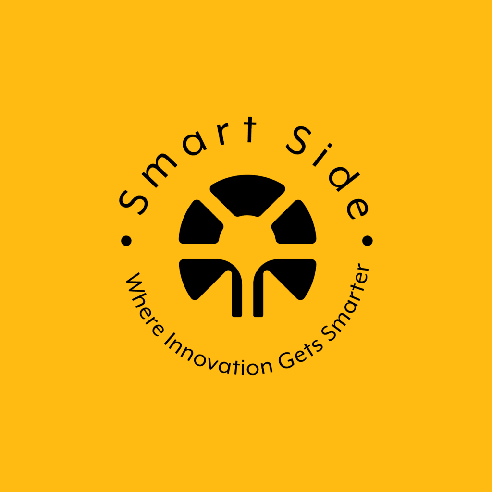
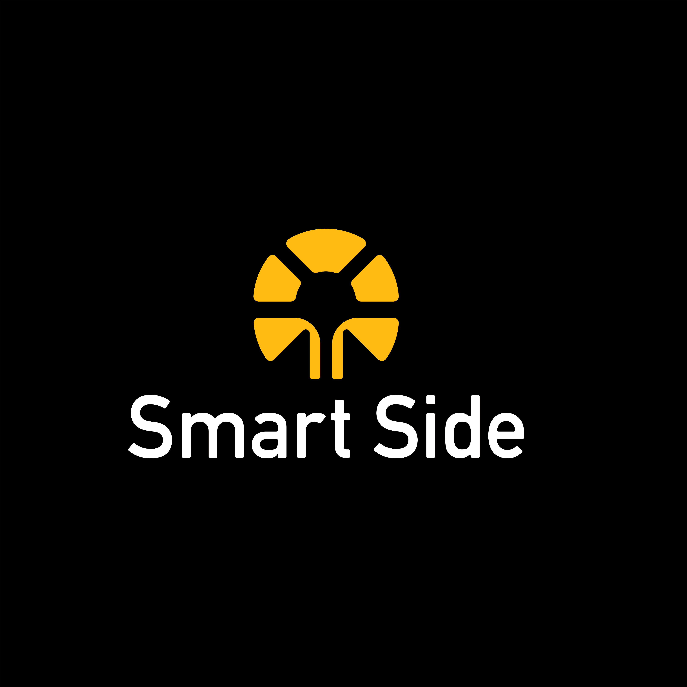
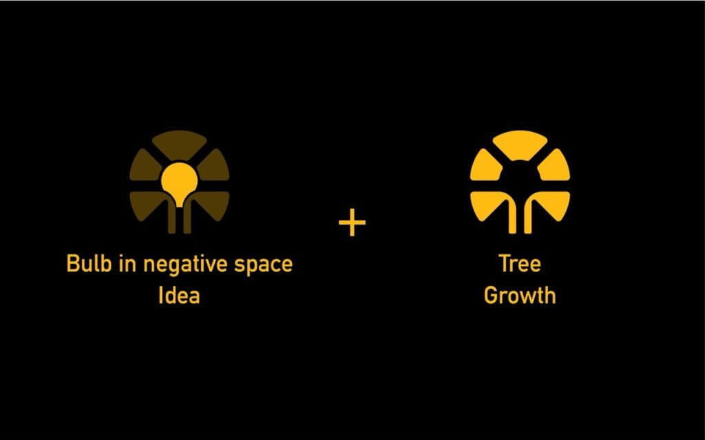
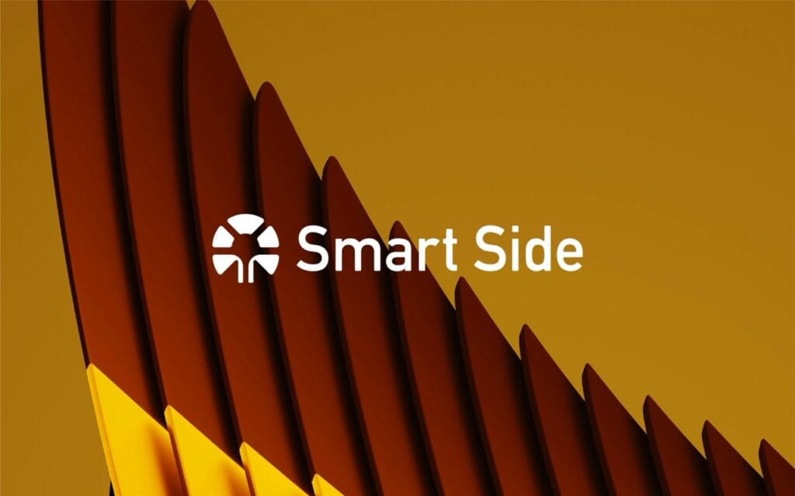

A tree, a hidden bulb, and a brand that reads as smart at any size.
Smart Side, a web development company, wanted a mark that captured innovation and growth. I designed a logo and brand identity that fuses a tree with a bulb hidden in negative space, built to stay legible and meaningful across web, app, and print.

The brief: make a web development company look as smart as it thinks
Smart Side is a web development company building user-focused digital products. They came to me with a concept but no clear way to express it. The ask was a logo that communicated creative problem-solving and technical depth, read as intelligent at a glance, and stayed adaptable across platforms.
The brand truth was human-centered design. The identity had to carry that idea into a single mark that worked on a website header, an app icon, and a pitch deck without losing meaning.


The idea: a tree with a bulb in the negative space
The design fuses two metaphors into one symbol. A tree stands for development and scalability, while a bulb sits hidden in the negative space at the center to signal bright ideas and smart thinking. The palette is deliberate: yellow for energy and creativity, black for strength and professionalism, white for clarity.
Type and color followed the same discipline. A rounded sans-serif keeps the mark approachable, and the color system was built to ADA-compliant contrast ratios so the identity stays accessible wherever it lands.


From sketch to system
The process moved from discovery workshops into rigorous sketching, then into typography, color, and scalability testing. I designed variants for web icons, footers, and app interfaces, then validated them in real scenarios: website headers, pitch decks, and merchandise.
The final delivery is a modular identity system, not a single file. It includes primary and secondary logos, monochrome and grayscale versions, brand guidelines with safe zones, logo lockups, and a starter brand kit so Smart Side can apply the identity consistently as it grows.
